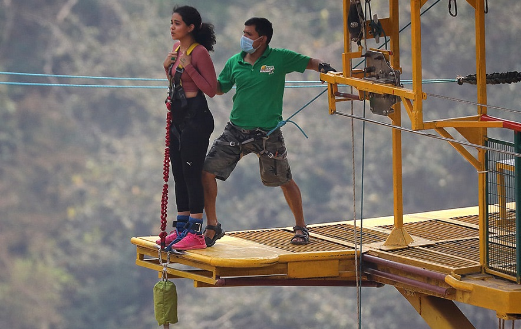
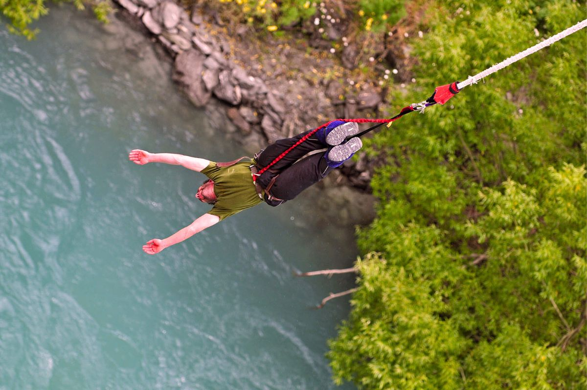
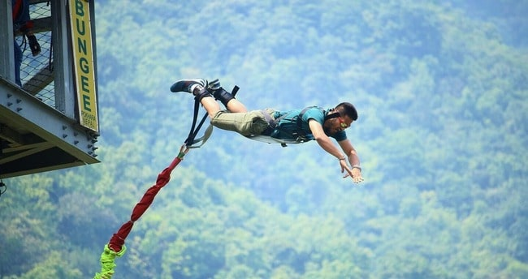
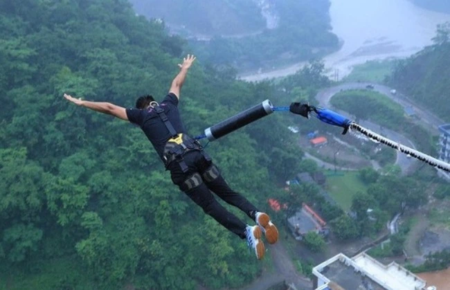

Bungee jumping in Rishikesh is one of the most heart-pounding and iconic adventure activities in India, offering an unforgettable free-fall experience over the sacred Ganga River. Located at Jumpin Heights (Mohanchatti, near Shivpuri), this is Asia’s first fixed platform bungee jump, standing at a staggering height of 83 meters (272 feet) from a steel bridge overlooking the roaring river and lush Himalayan valleys. The jump is professionally managed with world-class equipment, certified instructors, and strict safety protocols.
The moment you leap — with the wind rushing past, the Ganga far below, and the mountains all around — it’s pure adrenaline mixed with a deep sense of freedom and triumph. After the bounce, you can enjoy the scenic surroundings, take photos/videos, or relax at the riverside café. Rishikesh’s bungee is perfect for thrill-seekers, bucket-listers, and anyone wanting to push their limits in the spiritual heart of Devbhoomi Uttarakhand. It’s not just a jump — it’s a moment of conquering fear and embracing life.
September to May (post-monsoon to pre-monsoon) — clear weather, good water flow below, and safer conditions. Avoid monsoon (June–August) due to high currents and weather risks.
83-meter high platform (Asia’s first fixed bungee), breathtaking Ganga valley views, professional safety gear, video recording, nearby camping & rafting combos, and the ultimate adrenaline rush.
Minimum age 12, weight 40–110 kg, wear comfortable clothes & closed shoes, book in advance (especially weekends), listen carefully to instructors, and capture the moment with their video package.
"Bungee jumping in Rishikesh is more than a thrill — it’s a leap of faith over the sacred Ganga, where fear dissolves and the soul soars free in the arms of the Himalayas."